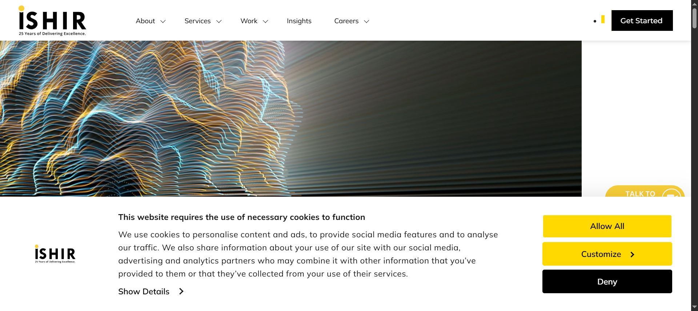
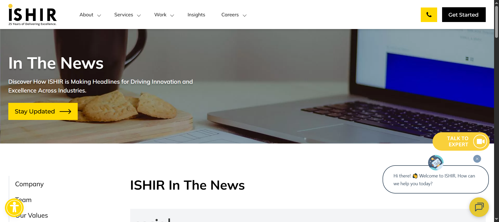

Started
Oct 10, 2025 02:36:57 PM
Ended
Oct 10, 2025 02:52:39 PM
Features Passed
5
Features Failed
2
Features
Scenarios
Steps
Timeline
Tags
| Name | Passed | Failed | Skipped | Others | Passed % |
|---|---|---|---|---|---|
| @TeamsPage | 2 | 0 | 0 | 0 | 100% |
| @InsightPage | 1 | 1 | 0 | 0 | 50% |
| @AboutPage | 3 | 0 | 0 | 0 | 100% |
| @NewsPage | 1 | 1 | 0 | 0 | 50% |
| @SuccessStories | 2 | 0 | 0 | 0 | 100% |
| @ClientsPage | 3 | 0 | 0 | 0 | 100% |
| @StaffingPage | 3 | 0 | 0 | 0 | 100% |
System/Environment
| Name | Value |
|---|---|
| AppName | Ishir.com |
| user | admin |
| build | v1.01 |
-
About Page Navigation
2:36:59 PM / 00:02:11:474 Pass
About Page Navigation
10.10.2025 2:36:59 PM 10.10.2025 2:39:10 PM 00:02:11:474 · #test-id=1As a user, I want to navigate through the About page to access information and forms.PassNavigate to Our Story pageGiven the user is on the Home pageWhen the user opens the About dropdownAnd selects the Our Story optionThen the Our Story page should appearPassNavigate to Get in Touch from Banner under Our Story pageGiven the user is on the Our Story pageWhen the user clicks the Get Started button under bannerThen the Get in Touch form should appearPassNavigate to Get in Touch from How We Engage under Our Story pageGiven the user is on the Our Story pageWhen the user clicks the Get Started button under How We EngageThen the Get in Touch form should appear -
Clients Page Navigation
2:39:10 PM / 00:03:02:334 Pass
Clients Page Navigation
10.10.2025 2:39:10 PM 10.10.2025 2:42:12 PM 00:03:02:334 · #test-id=30As a user, I want to navigate through the Clients page to access information and formsPassNavigate to Clients pageGiven the user is on the Home pageWhen the user opens the Work dropdownAnd selects the Clients optionThen Clients page should appearPassNavigate to Get in Touch from Clients page using clients sectionGiven the user is on the clients pageWhen the user clicks start your innovation journey buttonThen the Get in Touch form should appearPassNavigate to Get in Touch from Clients page using Let's talk linkGiven the user is on the clients pageWhen the user clicks Let's talk linkThen the Get in Touch form should appear -
About SuccessStories page Navigation
2:42:12 PM / 00:04:34:896 Fail
About SuccessStories page Navigation
10.10.2025 2:42:12 PM 10.10.2025 2:46:47 PM 00:04:34:896 · #test-id=59As a user, I want to navigate through the Insight page to access information and forms.PassNavigate to Insight pageGiven the user is on the Home pageWhen the user clicks the Insight optionThen Insight page should appearFailNavigate to Get in Touch from Insight pagecom.ishir.hooksmanager.ApplicationHooks.getAppLicationURL()Given the user is on the Insight pageStep skippedWhen the user clicks the Read More linkStep skippedAnd user clicks Get Started button over Insight detailStep skippedThen the Get in Touch form should appearStep skippedcom.ishir.hooksmanager.ApplicationHooks.tearDown(io.cucumber.java.Scenario)Navigate_to_Get_in_Touch_from_Insight_page -
News Page Navigation
2:46:47 PM / 00:01:18:276 Fail
News Page Navigation
10.10.2025 2:46:47 PM 10.10.2025 2:48:06 PM 00:01:18:276 · #test-id=79As a user, I want to navigate through the News page to access information and forms.PassNavigate to News pageGiven the user is on the Home pageWhen the user opens the About dropdownAnd selects the News optionThen News page should appearFailNavigate to Get in Touch from News main pageGiven the user is on the News pageWhen the user clicks the Stay Updated button on News PageThen the Get in Touch form should appearStep skippedcom.ishir.hooksmanager.ApplicationHooks.tearDown(io.cucumber.java.Scenario)Navigate_to_Get_in_Touch_from_News_main_page -
Staffing Page Navigation
2:48:06 PM / 00:01:53:486 Pass
Staffing Page Navigation
10.10.2025 2:48:06 PM 10.10.2025 2:49:59 PM 00:01:53:486 · #test-id=99As a user, I want to navigate through the Staffing Page to access different forms.PassNavigate to Staffing MenuGiven the user is on the Home pageWhen the user clicks the Services MenuAnd click Staffing Menu optionThen Staffing page should appearPassNavigate to Get in Touch via main banner on Staffing pageGiven the user is on the Staffing pageWhen the user clicks main Get Started buttonThen the Get in Touch form should appearPassNavigate to Get in Touch via bottom banner on Staffing pageGiven the user is on the Staffing pageWhen the user clicks bottom Get Started buttonThen the Get in Touch form should appear -
About SuccessStories page Navigation
2:49:59 PM / 00:01:20:707 Pass
About SuccessStories page Navigation
10.10.2025 2:49:59 PM 10.10.2025 2:51:20 PM 00:01:20:707 · #test-id=128As a user, I want to navigate through the Success Stories page to access information and forms.PassNavigate to Success Stories pageGiven the user is on the Home pageWhen the user opens the Work dropdownAnd selects the Success Stories optionThen the Success Stories page should appearPassNavigate to Get in Touch from Success Stories pageGiven the user is on the Success Stories pageWhen the user clicks the available view case studyAnd clicks Contact US Today over case studyThen the Get in Touch form should appear -
Teams Page Navigation
2:51:20 PM / 00:01:19:113 Pass
Teams Page Navigation
10.10.2025 2:51:20 PM 10.10.2025 2:52:39 PM 00:01:19:113 · #test-id=149As a user, I want to navigate through the Teams page to access information and forms.PassNavigate to Teams pageGiven the user is on the Home pageWhen the user opens the About dropdownAnd selects the Team optionThen Team page should appearPassNavigate to Get in Touch from Our Teams pageGiven the user is on the Our Story pageWhen the user clicks the Get Started button on Teams PageThen the Get in Touch form should appear
-
org.openqa.selenium.TimeoutException
2 tests
org.openqa.selenium.TimeoutException
2 failedStatus Timestamp TestName Fail 14:42:45 PM com.ishir.hooksmanager.ApplicationHooks.getAppLicationURL() About SuccessStories page Navigation.Navigate to Get in Touch from Insight page.com.ishir.hooksmanager.ApplicationHooks.getAppLicationURL()Fail 14:47:27 PM When the user clicks the Stay Updated button on News Page News Page Navigation.Navigate to Get in Touch from News main page.When the user clicks the Stay Updated button on News Page